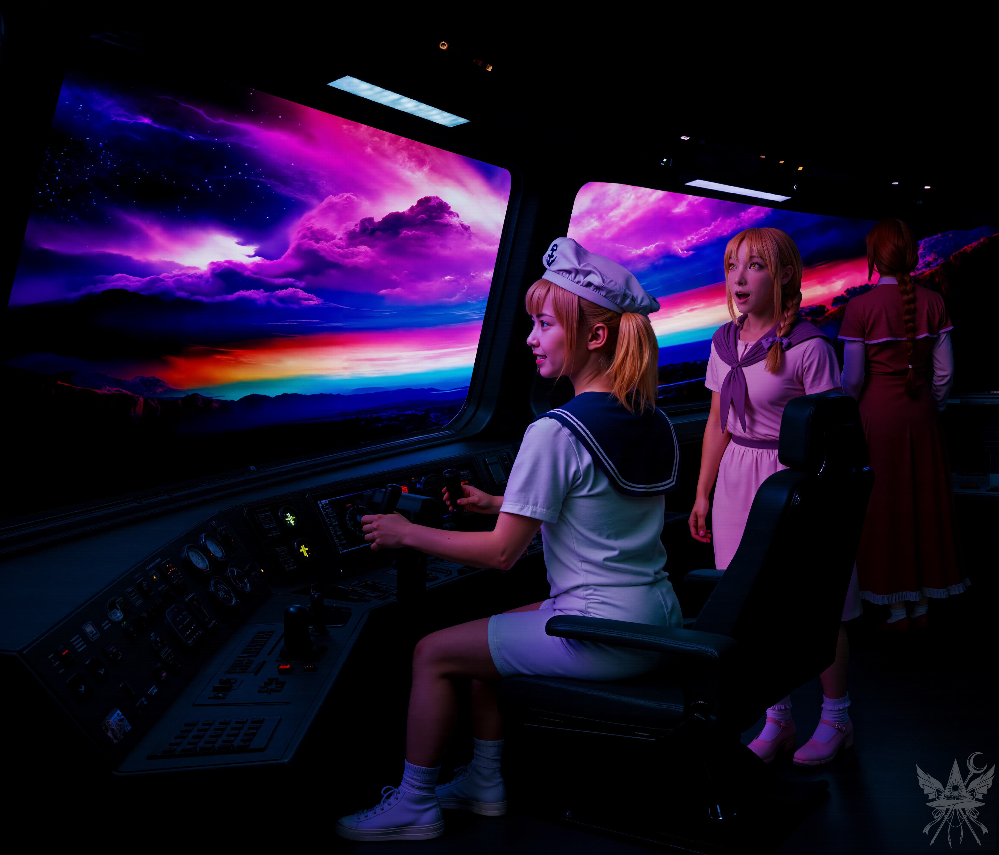
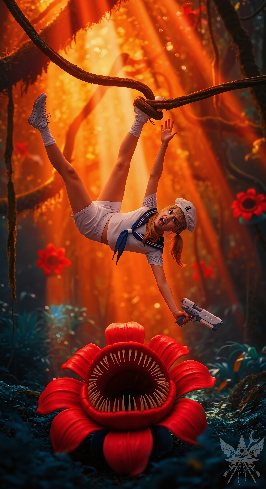
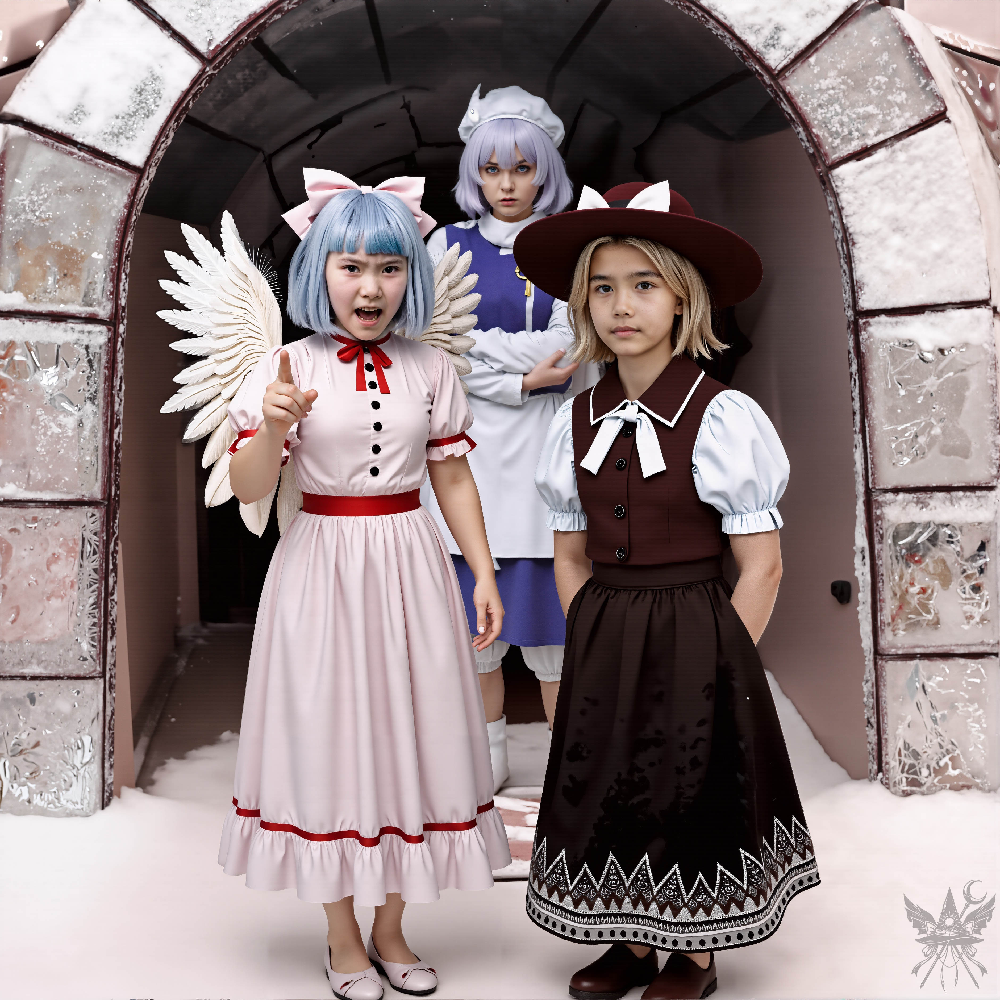

第49章 魔法のレッスン

圧倒的なスケールで広がる極彩色の空が、薄暗いコックピットをマゼンタと紫の光で毒々しく、そして神秘的に照らし出している。無機質な電子音が微かに響く冷え切った密室の中で、窓の向こうに広がる狂気じみた美しさは、種族を超えて心を奪っていた。操作盤の冷たい光を浴びながら、誰もが息を呑み、静かな高揚感に包まれている。
緑色の光を放つ操作パネルを叩き、進路を微調整していく。着陸地点は、今朝方乱暴に降り立った堕ちたる神殿の裏手だ。
（……あの天使たちに絡まれたら、面倒ね）
内心で静かに毒づく。
あてがわれた小さな船室には、布団が二つ敷かれていた。シャワーを浴びて着替えると、深い疲労と共に横たわる。しばらくして、ドタンとけたたましい音を立てて転がり込んできたのは、ひどく興奮した様子の相棒だった。
「あー、気持ちいい！ ねぇメデたん、明日は誰かをぶっ飛ばしに行こうよ！ そんで、ケーキも食べたい！ いっぱい！ 5個……いや、10個がいい！」
「……うーん、それはまた今度ね。もう寝ましょう？」
「ヤダ！ 寝るのヤダ！ 魔界ってすっごく面白い！ ずっとここにいる！ ……でも、あの魔女たちったら、マジ最低だったんだから！」
「魔女？ どうしたの？」
「サラがわたしを縛って神殿に連れて行ったときさ。（あーあ、わたしってドジだよね！ また小兎姫に捕まっちゃうなんて……）イグルーで見たあの魔女たちが、『金よ、ルイズ！ 3万シンキ！ 金はどこ！？ それとも商品を返せ！』って襲ってきたの！ 頭おかしいんじゃないの！？ あんな大金、見たこともないし！」
「オレンジ、あなたは今、ルイズの姿だってこと、忘れてるの？」
「あ、そっか！ すっかり忘れちゃってた！ でもね、サラが、あの……キモいやつからもらった紙切れを見せたら、あいつら、すごすご帰っちゃったの！ いつか絶対に、ぶっ飛ばしてやるんだから！ 特に白いヤツ！ わたしみたいに可愛い顔して、超乱暴だったんだから！ 囲碁でも勝負してやる！ 今度は絶対に勝つ！」
「でも、いつもズルしてるじゃない……」
あくびを噛み殺しながら、ぼそっと呟く。
「いいのいいの！ 相手がズルしたって、わたしは別に怒らないし！ ねぇ、弾幕をケーキの形にしたら絶対面白いと思わない？ そんなことできる人いるのかな？ ねえメデたん、聞いてる？ そんでね……！」
＊＊＊
翌朝。焼け付くような朝日が降り注いでいた。身支度を整え、布団で丸まるオレンジを残して操縦室へ向かうと、すでにスクリーンの前でキーボードを叩く背中があった。
「うーむ、極性を逆転させたらどうなるかな……。やっぱりエラーが出ちゃうんだ」
「おはよう、ちゆり。何をしてるの？」
「おはよう！ プログラミングだよ。実は、バイオレーダーのドライバーを更新しようとしてるんだけど、これがうまくいかなくてさ」
「バイオレーダー？」
「生き物を感知できる機械だよ。夢美様ったら、毎日缶詰ばかりで飽きちゃったみたいで、『狩りしろ！』ってうるさいんだ。これがあれば、何かしら獲物が見つかるんじゃないかと思って……。あっ、ちょっと待って！ こうすればコンパイルできるかも！」
無数の難解なコードが流れる画面を、食い入るように見つめている。
「エウレカ[1]エウレカ(古代ギリシア語：「εὕρηκα）：「見つけた！」！」
歓声が上がった。
「ミラス・エリニカ[2]ミラス・エリニカ(ギリシャ語：「Μιλάς ελληνικά;）：「ギリシャ語が話せますか？」？」
聞き慣れたギリシャ語の響きに、思わず母国語で返す。
「え、何それ？ 全然わかんないよ！」
「さっき『エウレカ』って言ったじゃない」
「あー、つい口から出ちゃっただけ。……見て見て！ 半径1キロ以内の生き物が全部レーダーに映ってるんだ！ すごいじゃん！」
「でも、何か見つけたとして、魔界の野生動物を相手にするのは大丈夫なの？」
「……それは……確かにちょっと心配かも」
少し照れくさそうに笑う。
「でも、魔法を教えるって約束してくれたよね？ ねぇ、お願い！ 狩りに行こうよ！」
（約束した手前、無碍にはできないわね……）
小さく頷き、宇宙船から外へ出る。眼前には、巨大な赤い太陽に照らされた堕ちたる神殿がそびえ立っていた。
（昨日、この神殿の裏側で夢美たちの船を見たというのに……）
奇妙な巡り合わせに内心で皮肉な笑みを浮かべつつ、密林へと足を踏み入れた。
＊＊＊
「くそっ、隠れてるつもりかよ、畜生どもが」
レーダー画面を睨みつけながら、舌打ちが漏れる。
「大型の反応は……なし、か」
「じゃあ……魔法のレッスンでも始める？」
促すと、目を輝かせてブラスターをしまい、正面に向き直った。
「まずは……魔法の理論から説明するわね」
「理論も面白そう！ 集中して聞くよ！」
「私たちの体の中を、宇宙から降り注ぐエネルギーが流れてる。頭頂から入って、股から地面へ抜けていくの。そして今度は地面から体に入って、また宇宙へと戻っていく。このエネルギーの循環があるから、私たちは生き、喜び、決断し、愛し、語り合い、考えることができる。最終的には……宇宙の真実を理解できるのよ。ちょっと難しいかしら？」
「うーん……まあね。で、次は？」
「このエネルギーは、体の中にある二本の『線』を通って流れてる。一本は背骨に沿って、もう一本はそこから五センチほど離れた場所を、体の中心に向かって。そして、これらの流れはそれぞれ……七つのチャクラと呼ばれるポイントを通過するの」
「チャクラ……？」
「体のエネルギーの通り道みたいなものね。魔法を使うときは、このチャクラを通してエネルギーを操るの。私自身、最近になってようやく理解し始めたところだから、うまく説明できないかもしれないけれど。元々は召喚魔法が専門だったから、チャクラを直接扱うことはほとんどなかったのよ。でも、魔界に来てから、魔法の流れがずっとクリアに感じられるようになった。まるでこの世界全体が巨大な魔法陣みたいに……」
言葉を区切り、まっすぐに視線を向ける。
「自分のチャクラを感じ取ってみない？ 魔法を使うには、エネルギーの流れをコントロールする必要があるわ。電気は知ってる？ 電位差で流れるように、魔法のエネルギーも……」
「電気？ うちじゃ小学校で習う常識だよ！ で、チャクラってどうやって感じ取ればいいの？」
「私と同じように立って、目を閉じて、ゆっくりと息を吸い込んでみて。頭頂からエネルギーが入ってくるのを感じられる？ そして吐くときは、股から地面へ流れ出ていくのを……感じてみて。一番力が入ってる場所はどこ？」
目を閉じたまま額に手を当て、数秒後にゆっくりと目を開く。
「……なんか……ゾワゾワする」
「なるほど。主要チャクラは、アージュニャーと呼ばれる場所にあるのね。研究者はここが発達してる人が多いのよ。もっと活性化させれば……未来が見えるようになるかもしれないわね」
「じゃあ、もう一度ゆっくりと息を吸い込んで。『第三の目』、眉間のあたりに意識を集中させてみて。力を蓄えるために、数回繰り返して」
指示通りに呼吸を重ねるごとに、溢れ出すエネルギーの波を感じ取る。
「そして、その力を右手に導くイメージで……私に向かって放ってみて」
手のひらから藍色の弾幕が放たれ、胸に命中した。無防備だったため軽い衝撃が走るが、威力は取るに足らない。
「やった！ 魔法が使えた！ どうして今まで気づかなかったんだろ！ 科学なんてもういいや、私も魔法使いになるんだ！」
無邪気に歓声を上げる。
「まあまあ、落ち着いて。これまでの経験も大切よ。それに、戦闘魔法に関しては私の力もまだまだだから、あまり期待しないで。防御の練習をしたいから、もう一度撃ってみて」
エリスのアドバイスを思い出し、攻撃を受けたのと同じアージュニャー・チャクラに意識を集中させる。ポケットのクリソプレーズにエネルギーを流し込もうとするが、石は冷たく拒絶し、力を弾き返してきた。
（やはり、この石は喉のチャクラしか増幅してくれないようね……）
石をしまい、自らの集中力だけで淡い藍色のフィールドを展開する。飛来する弾幕を受け止めるたびに、フィールドの強度は増していくが、維持にはひどく神経をすり減らした。
（この子、意外と才能があるのかもしれないわ……）
思考が逸れた瞬間、左足首に生暖かい異物が絡みつく感触があった。振り返る暇もなく、視界が反転する。

高温多湿で息苦しい熱帯雨林のような空気が肺を満たす。咄嗟に見上げると、ちゆりが蔓に足を奪われ、不安定な逆さ吊りの状態で宙を舞っていた。ギリッと締め付けられる植物の軋みと、必死に抗う無機質な銃器の駆動音が響く。彼女の直下では、獲物の落下を待ち構える巨大な捕食植物が死の気配を漂わせており、今まさに捕食されんとする極限の緊張感が、むせ返るような熱気と腐臭と共に突き刺さってきた。
とっさに石を持ち替え、右の掌から光弾を連射する。怪植物は苦悶の叫びを上げ、自らの茎を噛み切ると、真っ赤な死の光線を放ってきた。間一髪で横へ飛び退き、射線を逸らす。
直後、頭上から悲鳴が轟いた。逆さ吊りのまま必死にブラスターの引き金を引いているが、狙いが定まらない。そして、その真下にもう一つの巨大な顎がぱっくりと開いていた。
「ちゆり、フォースを使って！」
思わず叫んでいた。某SF映画の記憶が口を突いて出たことに舌打ちするが、もはや取り消せない。
混乱しながらも、空いた掌を下へと突き出し、待ち構える牙の群れへと極限の集中を向けるのが見えた。こちらも目の前の死線を掻いくぐるのに必死で、援護に回る余裕など一秒たりともない。
放たれた藍色の光弾が下の花に直撃した瞬間、拘束が解け、傷ついた花腔へ向かって真っ逆さまに墜落していく。しかし地面に激突する寸前、見事な体捌きで体勢を立て直し、至近距離からブラスターの銃弾を怪物の急所へと容赦なく叩き込んだ。
荒い息を吐きながら視線を戻すと、メデアが対峙していた最初の花も弾幕に焼き尽くされ、黒焦げになった残骸が地面に崩れ落ちていた。
＊＊＊
「はあ……まさか、あんなに手こずるとは思わなかったわ」
息を整えながら呟く。
倒れた花の残骸から、奇妙な実を摘み取っていた。
「ほら、サラダの材料ゲット！ あとは肉だけだね」
「でも、その肉も私たちを狙ってるかもしれないわよ」
皮肉っぽく笑ってみせるが、内心では不安が拭えない。
「大丈夫！ もう魔法使いの弟子だし、気をつければ狩りだってへっちゃらだよ！」
疲れも見せず、実をリュックサックに詰め込み、黒焦げの残骸にも同じものがないか確認している。そして、レーダー画面に目を向けた。
「メデアさん、見て！ すごいよ！」
興奮気味に、北西約500メートル先にある巨大な光点を指差す。
「こんな大きな反応、見たことない！ どんなモンスターかな！？」
光点がゆっくりと東へ、魔界の日の入りの方角へと移動していることに気づく。画面を拡大するように指で操作した。
「ちゆり、違うみたい。一体のモンスターじゃないわ。よく見て。緑色の点が密集してるでしょう？ 百匹はいるんじゃないかしら。しかも、隊列を組んで移動してる……。レーダー、ちゃんと動いてる？」
ちゆりは何も言わず、ブラスターを手に取ると、獲物を追うハンターのような笑みを浮かべて、密林の奥へ慎重に進んでいく。
（まあ、オレンジと違って無鉄砲ではないみたいだし、大丈夫……よね？）
後を追う。ジャングルは徐々にまばらになり、透き通るような光が差し込む開けた場所に出た。レーダーで周囲を警戒しながら慎重に進んでいるが、敵の姿は見えない。
そこに……。

濃密なピンク色の霞がかかる中、高温多湿で重苦しい異界の空気が肌にまとわりつく。息苦しさを覚えるほどの静寂を破るのは、無数の軍靴が土を踏みしめる地鳴りのような足音と、金属が擦れ合う無機質な響きだった。 圧倒的な数の軍勢が、地を這うような重圧感と統制された威圧感を伴って、這い寄るように迫ってくる。 かつて街や酒場で見かけたのと同じ、魔界の住人の気配。だが、彼らが纏う軽装の鎧と粗末な武器が、それが単なる群れではなく、明確な意思を持った軍隊であることを物語っていた。 一体なぜ、このような大軍が行進しているのか。いくつもの疑問が、冷たい汗と共に背筋を這い上がる。
悪魔の大軍が完全に去っていくのを見届けてから、近くの薄い緑色の点を確認し、その場所へ慎重に近づいていった。
「何の生き物かな……。でも、もうダメみたい」
地面に横たわる黒い獣に近づくと、それが巨大な三つ首のケルベロスだとわかる。腹部を大きく裂かれ、苦しそうに息をしていた。ちゆりは迷わずブラスターを頭に向け、引き金を引いた。
「安らかに眠ってね、魔界の野獣。メデアも毎日缶詰ばかり食べ続けたら、人間に牙を向くモンスターになっちゃうかもね」
ケルベロスの死骸を運び、宇宙船へと戻る。
＊＊＊
船内に戻ると、温かい空気が迎えてくれた。いつものようにオレンジが抱きついてきて、狩りに連れて行ってもらえなかったと散々愚痴をこぼす。獲物となったケルベロスと謎の実は、る～ことが手際よくキッチンへ運び、調理を始めた。ちゆりは手に入れたばかりの魔法の力に夢中で、両手に弾幕を出現させたり消したりして楽しんでいる。その様子を見た夢美が、すかさず無数のセンサーを取り付け、
「アンコール！ もう一回やってみてちょうだい！」
とせがんでいた。
朝食は豪華だった。香ばしく焼かれたケルベロスのステーキと、食虫植物の果実を使ったサラダ。その意外な組み合わせは、すっかり二人を魅了したようだ。オレンジは相変わらず口に食べ物を入れたまま喋ろうとして、何度もむせている。ステーキの肉が少し硬いと感じたが、それでも十分食べられた。
（昨日の……アレと比べたら、随分まともね）
「メデアさん、本当にありがとう。おかげで、こんな素晴らしい世界に来ることができたわ」
骨付きステーキをもう一切れ口に運びながら、夢美が言う。
（朝食を食べるのに命がけの戦いなんて、夢にも思っていないだろうね……）
内心で苦笑しながら、静かに答える。
「ええ、魔界は刺激的ですね。でも、油断は禁物ですよ」
「それで……いよいよ、あの怪物と戦うんだね？」
ちゆりがワクワクした様子で尋ねる。
「ええ、いずれは戦わなきゃいけないわね。でも、その前に少し寄り道させてください。私を追ってきた悪魔……覚えてますか？ なぜか私が地獄から来たことを知っていて、危険な存在なんです。このまま放っておいたら、全員が危ないかもしれない。幸いなことに、魔界には、その悪魔の正体を知っている魔女が二人いるみたいなので、まずは彼女たちに会って情報を集めたいんです。彼女たちは氷雪世界に住んでいるので……夢美さん、宇宙船で送ってもらえませんか？」
「もちろん、一緒に行くよ！ 私も魔女に会いたい！ 夢美様、魔流スキャナーの修理は終わった？」
夢美が口を開く前に、ちゆりが答えた。
「さっき、それでちゆりをスキャンしたばかりじゃない。……録画しておくわ。魔女たちなら、何か面白い魔力のデータが記録できるかもしれないわね」
目を輝かせながら答える。
「ええ、それは間違いないでしょうね」
＊＊＊
街中で余計な注目を集めないように、宇宙船は少し遠回りをしてから氷雪世界へと降り立った。昼間の強い日差しも、この地の骨を刺すような寒さを和らげることはできない。ユキとマイのイグルーの前に無遠慮に着陸させると、る〜ことを船内待機に残し、四人で船を降りた。
イグルーへ向かう途中、オレンジは獲物を探す獣のようにキョロキョロと辺りを見回し、落ち着きがない。まるで、今にも誰かに飛びかかりそうな勢いだ。
「オレンジ、少し落ち着きなさい」
静かに嗜めると、素直に頷いた。
イグルーの扉に手をかけようとした瞬間、扉が開いた。そこに立っていたマイの顔色は、酷く悪い。
「……よくもまあ、こんなことになった後で、来れたものね」
冷ややかに言い放ち、鋭い視線でこちらを射抜く。
反射的にブラスターに手をかけようとしたちゆりの腕を掴み、静止させる。
「『こんなこと』って、一体何のことかしら？ 卑劣な罠を仕掛けたくせに、反省の色も見えないのね」
言い放つと、ユキも姿を現した。困ったように肩をすくめ、視線を向けてくる。
「マイは、あんたたちのせいで命の危険にさらされた上に、せっかくの事業も台無しになりそうだったから怒ってるのよ。私もそれは残念だったけど……メデアの事情も分かるし。だから……もう帰ってくれない？」
だが、マイは一歩も引かない。
「……そうはいかないわ。もう、どこにも行かせない」
氷の刃のような視線で射抜いてくる。
ユキとマイに続き、レティが姿を現した。ゆっくりと歩み寄り、オレンジを値踏みするような視線で見据える。
「あら、ハニー・ルイちゃんじゃないの。……私を納得させるだけの言い訳、ちゃんと用意してきたのかしら？」
甘ったるく囁くような声。だが、その響きは冬の寒さのように冷酷だ。

青白い冷気が肌を刺す極寒の空間で、奇妙な不均衡が広がっていた。 圧縮された氷雪のアーチから一歩踏み出したマイが、激しい怒りを露わにして叫び声を上げている。 その騒音と熱を帯びた動的なエネルギーとは裏腹に、傍らのユキと奥に佇むレティは、表情一つ変えずに完全に静止していた。 音を吸い込むような雪の静寂と無関心が、張り詰めた空気の中で異様なコントラストを生み出し、底冷えするような緊張感をさらに研ぎ澄ませている。
「違う！ わたしはルイズじゃない！」
必死に反論するが、レティは表情一つ変えない。
ゆっくりと近づき、その肩を掴む。
「いい加減にしなさい。商品だけ持って姿をくらまして、今度はあんたじゃないって？ そんな言い訳が通用すると思ってるの？ 全部返すのよ。一シンキだって許さないわ」
「いいよ、そんなに喧嘩したいなら！ わたしが相手してやる！ でも、お金は返せない！ だって、お金なんかないんだから！」
ムキになって叫び返す。
（……ちょっと待って。ユキとマイはオレンジの正体を知っているはずなのに。どうしてレティに教えようとしないの？）
事態の不自然さに、嫌な予感がよぎる。
夢美とちゆりは、スマートフォン大の機械を起動させ、興味津々で様子を見守っていた。
「ユキ、幻月について少し聞きたいだけなの。教えてくれたら、すぐに帰るわ」
より話しやすそうなユキに視線を向け、穏やかに切り出す。
「もう逃げ出すつもり？ だったら、勝負はどう？ あんた、飛べないんでしょ？ 弱虫」
マイが挑発するように笑った。
「メデたんは飛べるよ！ とっても上手なんだから！」
誇らしげに庇い立てしてくる。
（……いつかこの子の口をセロテープで封じてやりたいわ）
「ふふん、それならなおさら面白いわね。あんたと私だけの勝負よ。ルールは簡単。離陸後、最初に地面に触れたほうが負け。殺す気はないけど、友達を巻き込んだら……容赦しないわよ。いいわね、ユキ？」
ユキに視線を向ける。
困ったように眉をひそめて答える。
「……ええ、正々堂々とした勝負なら邪魔しないけど。でも、メデアさんたちが可哀想だわ……。こんなことになっちゃって」
その言葉に耳を貸さず、条件を突きつけてくる。
「じゃあ、賭けの内容を決めましょうか。あんたが負けたら、二度とこの氷雪世界に近づかない。1キロ以内もダメよ。それに、あんたから何か……面白いものを貰う。もしあんたが勝ったら……まあ、そんなことはありえないと思うけど……幻月について私が知っていることを全部教えてあげる。それに……私の好意も手に入れられるわ。マイの好意は……それなりの価値があるのよ。さあ、何か賭けて、始めましょうか」
その間にも、オレンジはすでにレティの前に立ち、二人だけの決闘を始めようとしていた。
[SYSTEM ALERT: 音響兵器デプロイ完了]
▼ 本章の絶望を1000%味わうための専用聴覚データ ▼
■ YouTube：『可能性空間の特異点とパイプ椅子』